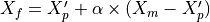
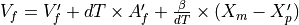
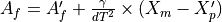
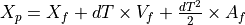

WSF_ALPHA_BETA_GAMMA_FILTER¶
- filter WSF_ALPHA_BETA_GAMMA_FILTER¶
filter <name> WSF_ALPHA_BETA_GAMMA_FILTER ... Commands ... end_filter
Overview¶
Defines an alpha-beta-gamma filter for filtering tracks.
Commands¶
- alpha <value>¶
Defines the filter’s alpha (position) parameter.
- beta <value>¶
Defines the filter’s beta (velocity) parameter.
- gamma <value>¶
Defines the filter’s gamma (acceleration) parameter.
- debug¶
Writes debugging information to the standard output.
Methodology¶
The alpha-beta-gamma filter operates using the following algorithm:




Where:


The primed values are the filtered values from the last filter update.